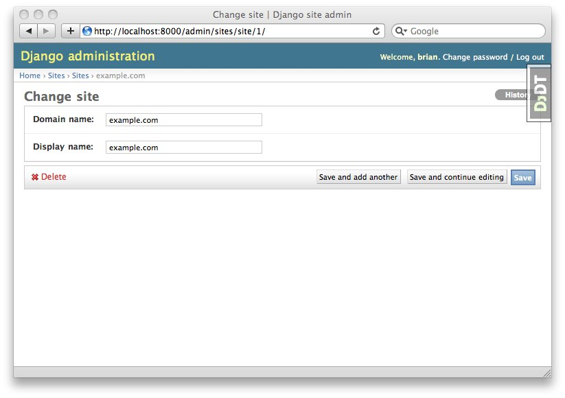
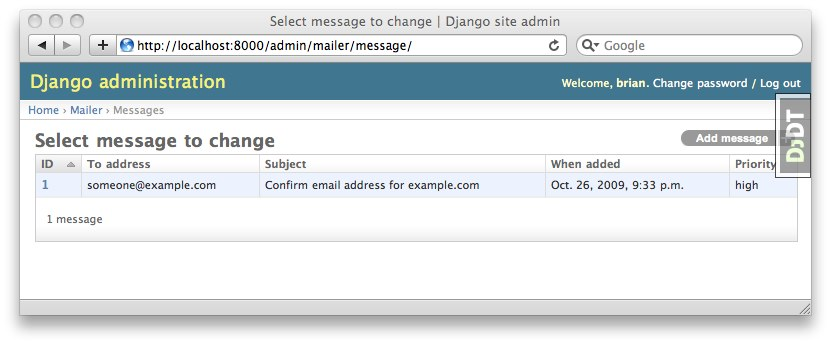

Yes. Pinax 0.7 ships with Django 1.0.4 by default. Django 1.1 came too late in our 0.7 release cycle. However, we tested it on Django 1.1 to ensure it works and it works well. To use Django 1.1 in your Pinax project simply follow our installation documentation and once you are in the virtual environment run:
pip install -U Django==1.1.1
This will install Django 1.1.1 over 1.0.4.
Yes and no. Our stable release 0.7.X (at 0.7.1) does not support Django 1.2. We will attempt to make 0.7.2 compatible to run on Django 1.2. Installing Django 1.2 over 1.0 that ships with 0.7 will work the same way as seen above. We hope to release 0.7.2 soon. There are no timelines.
On the other hand our development version of Pinax will ship with Django 1.2. Stay tuned for more news regarding the releases of 0.9.
example.com is the default value for Site.objects.get(pk=settings.SITE_ID).domain. This comes from the Django contrib app named sites. It is enabled in Pinax by default. Pinax uses this value to construct URLs back to your site in e-mails, for example. There are two ways to change this value. First, you can modify it in the shell (using python manage.py shell):
>>> from django.conf import settings
>>> from django.contrib.sites.models import Site
>>> site = Site.objects.get(pk=settings.SITE_ID)
>>> site.domain = "localhost:8000"
>>> site.name = "Development site"
>>> site.save()
Alternatively, you can perform the same action through the admin interface.

Pinax queues all e-mail for delivery. This is the behavior of django-mailer. All messages are stored in the database. This enables you to view what will be sent via the admin during development.

To send the messages that are queued you should use the send_mail management command. To invoke this you would run:
python manage.py send_mail
Be sure you have set the appropriate EMAIL_* settings. A full list of these settings can be found in Django settings documentation. Our deployment documentation gives instructions on how to set this up on a cron.
Also, some e-mail may occur as a result of notifications. Some notifications are queued. Be sure you run:
python manage.py emit_notices
to clear the notification queue and get those e-mails queued.